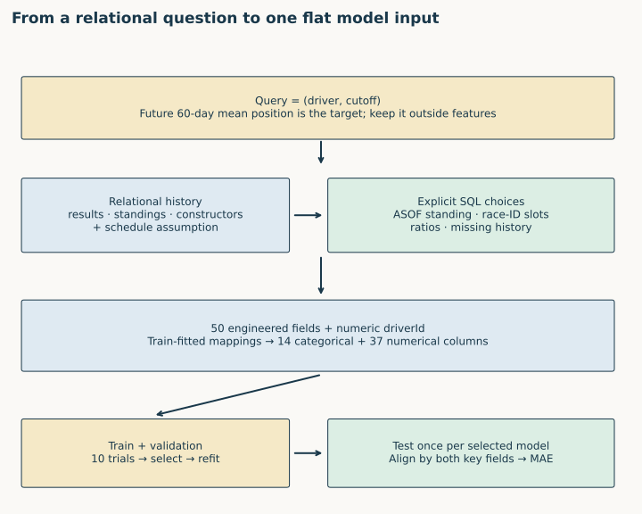
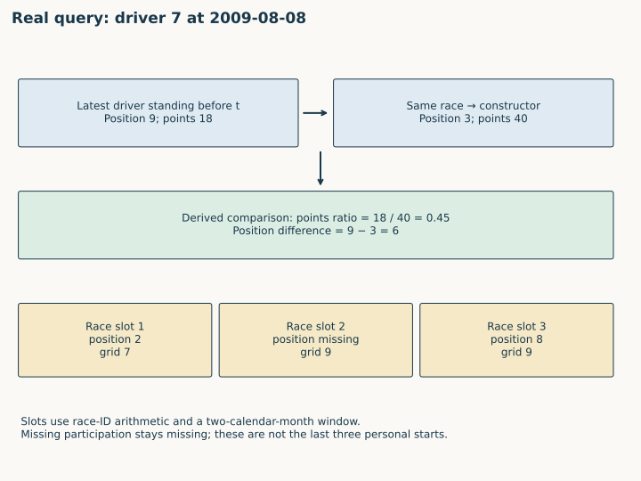
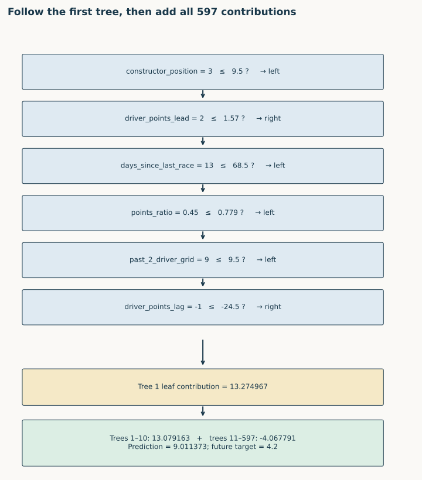
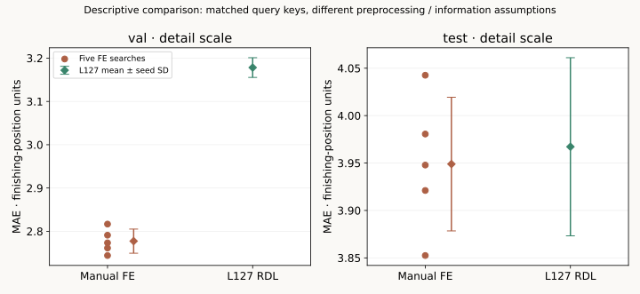
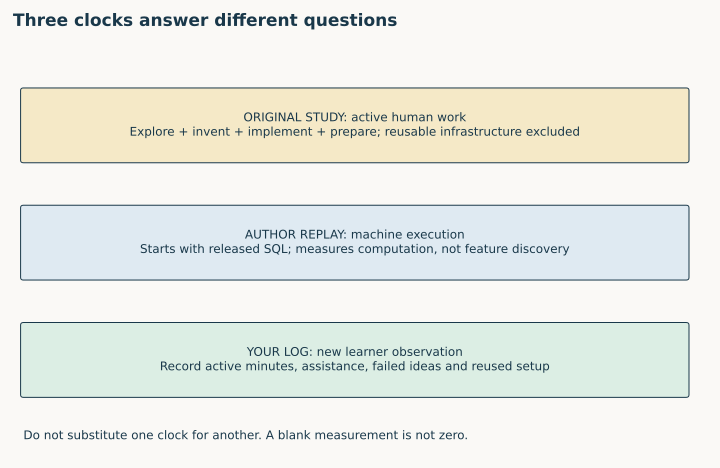

Year4 · Quarter1 · Lesson129
Manual feature engineering: what RDL must beat
The win. Build and defend a manual-feature baseline that answers the same relational prediction question as a GNN. Trace its inputs, train it without test-guided decisions, and account honestly for the human work behind its features.
Student lab · Executed solution · Reference · Reproduction contract · Your effort log
1 · The baseline must get access to the relationships¶
Lesson 128 established the query, target, head, loss and metric. That makes the question comparable. It does not make the information available to competing methods comparable. A tree trained only on a driver's biographical row cannot exploit race history that a relational GNN receives through its edges.
Recall first. What uniquely identifies a task row? Why can the same driver have many labels? When may an event influence a prediction? Which split chooses a model?
Our mission is to test whether relational learning earns its complexity. Its meaningful competitor is a capable practitioner who joins useful related information into a flat table and trains a strong tabular model. The skill from Lesson 009 now spans multiple tables; the comparative discipline from Lesson 127 still applies.
The primary reading is Robinson et al., RelBench v1, §6 and Appendix C. Read those alongside the released F1 SQL and training script. Table 7's LightGBM baseline uses raw entity features. Figure 3's data scientist uses engineered relational features. They are different experiments. Do not use the Table 7 number as a manual-FE reproduction target.
Study evidence. One experienced data scientist explored databases, proposed features, implemented SQL, and supplied feature tables to a standardized tuned LightGBM pipeline. Exploration was capped at four hours and ideation at one hour; SQL implementation time was uncapped and recorded. The paper reports 96% less marginal human work for RDL on average. Reusable infrastructure was excluded, as was the brief optional post-hoc analysis. This is a result under that study's conditions, not a universal multiplier for every practitioner, task or modern assisted workflow. §6 protocol and results.
2 · Start from a feature hypothesis, not a join¶
The selected task is rel-f1/driver-position: for a driver at cutoff t, predict mean finishing position over (t, t + 60 days]. Smaller MAE is better. We retain all 7,453 training, 499 validation and 760 test queries. The released cohort conditions on future participation; a driver with no recorded future race does not receive a zero position. That limitation from Lesson 124 remains.
Ask what could be predictive before touching SQL:
| Hypothesis | Candidate feature | Required relation | Failure to guard against |
|---|---|---|---|
| Recent form persists | Positions in recent races | driver → results → races | Using a result after t |
| Team strength matters | Latest constructor standings | driver → results → constructor standings | Joining the wrong season or constructor |
| Current standing captures accumulated performance | Driver points and position | driver → standings | Selecting the final season standing |
| Race context matters | Upcoming circuit and round | races → circuits | Assuming the future schedule was already published |
| Experience or identity helps | Age, nationality, driver identity | driver row | Treating an arbitrary numeric ID as a measured quantity |
Predict. Which hypothesis needs event history, and which needs evidence of publication time? A future race date can be legitimate input if its schedule was known at t. A future result cannot be used merely because its date appears in the same race row. Availability belongs to a fact, not automatically to its entire table.


Before opening the solution, propose one feature and record why it might help. Start your effort log. Record active human minutes separately from machine seconds and identify reused setup. A log with unknown time is incomplete; an empty entry is not zero.
3 · Trace the released SQL into one feature row¶
The SQL first identifies the last observed driver standing, using an ASOF left join: among matching driver rows, select the closest date strictly before the query cutoff. A left join retains queries with no matching history and leaves their feature values missing. An inner join would silently change the evaluated cohort.
ASOF LEFT JOIN standings2
ON labels.driverId = standings2.driverId
AND labels.date > standings2.date
The last standing identifies a race; that race and driver identify a result; the result identifies the constructor. The constructor's standing at that same race supplies team strength. For example, points_ratio = driver_points / NULLIF(constructor_points, 0) returns missing when division by zero would otherwise occur. Missing history and a genuinely zero number of points express different facts.
The released pipeline also uses three past race slots and three upcoming race slots. These are positions in race-ID arithmetic, not the driver's last three participations. Past slot i has ID last_race_id − i + 1 and must lie within the previous two calendar months. If the driver skipped that race, the slot is missing. Upcoming slots have IDs last_race_id + i and are restricted to the next calendar month. Calendar months here differ from the target's fixed 60 days.


For driver 7 at 2009-08-08, driver points 18 and constructor points 40 give 0.45. Driver standing 9 minus constructor standing 3 gives 6. Past slot 2 has a recorded grid but missing finishing position: missing values need not mean the whole row is absent.
A subtle aggregate. pct_laps_completed divides a driver's laps by the maximum laps among eligible joined result rows for that race, within the split's feature-generation query. It is not explicitly the maximum over every driver in the raw race. The release also calls position − grid a position gain: a negative value indicates moving up. Read computations instead of trusting feature names.
Audit result. An independent Python/pandas reconstruction matches all 443,552 SQL output values checked: 50 engineered values per query plus train/validation targets. It also independently reconstructs all 8,712 targets from raw future race results. The audit verifies all 11,892 past-result links precede their query. It finds 12,773 upcoming-schedule links, whose publication times are unavailable. Complete audit.
The released database loader caps dated rows at 2010-01-01. Even later test queries receive this frozen database. As a result, this replay has no recent past-slot or upcoming-slot features for the 760 test queries, although older cumulative standings remain. That is a material distribution change, not something to quietly repair in a reproduction. Static attributes and actual arrival histories are also unavailable. Matching the SQL does not establish full point-in-time validity.
4 · Implement a feature you can reason about¶
The student function past_summary is a deliberately simpler, separate feature hypothesis: count, mean position, and recency in a fixed lookback window. It requires both event time and arrival time. In the illustration, cutoff t = 10 and lookback = 8 select event days in (2,10) whose arrival is no later than 10.
- A value 4 at event day 5, arrival day 5 is eligible.
- A value 2 at event day 9, arrival day 10 is eligible.
- A value 99 at event day 8, arrival day 11 is unavailable.
- A value 88 at event day 10 is excluded by the strict-past contract.
Therefore count = 2, mean = (4 + 2)/2 = 3, and recency = 10 − 9 = 1 day. If no history exists, return missing, not a fabricated zero finishing position.
TODO 1. Implement this filter and aggregation. In the notebook, your function constructs features for every real query, and a small depth-three tree trains on those features. That is a course experiment, separate from the released 50-feature baseline. For the real data we can only assume arrival equals event time; the notebook labels this assumption explicitly. The synthetic late-arrival case tests a guarantee the archival database cannot verify.
CHECK. Future rows must not change a past summary; changing an arrival from day 10 to day 11 can. Defend each boundary before running the checker.
5 · Model architecture: an additive tree ensemble¶
The SQL produces 53 train/validation columns: two query keys, one target and 50 engineered features. The training script creates a variable listing identifier columns but never actually removes them. Numeric driverId enters the model. The timestamp is materialized by PyTorch Frame but ignored by its LightGBM input adapter. The final matrices are 7,453 × 51, 499 × 51 and 760 × 51: 14 categorical columns followed by 37 numerical columns.
Preprocessing learns categories from training rows, then uses the same mappings on validation and test. Unknown categorical values use the mapping's missing/unknown representation; numerical NaNs stay missing. Tree nodes can route missing values along a learned default branch. Test rows do not fit these mappings. Inspect the visible input adapter, not just a declaration of the feature schema.
A boosted tree model predicts an additive sum:
prediction(x) = leaf₁(x) + leaf₂(x) + … + leafₘ(x).
Each tree routes a row through threshold or category tests and returns a leaf contribution. In the saved LightGBM representation, leaf values already include the relevant scaling; the first tree also carries the initial prediction. Do not multiply them by the learning rate again. Later contributions can be negative. The regression objective is L1 / absolute error, matching validation MAE. This is not a neural network trained by the GNN optimizer.


In seed 0, this row follows 6 tests in the first tree and reaches leaf 13.274967. The first ten trees sum to 13.079163; the remaining 587 contribute -4.067791. Total prediction 9.011373, target 4.2, absolute error 4.811373. The error is large on this row even though the model's aggregate MAE is lower. Machine-readable trace.
Predict. Can the leaf of the first tree alone be interpreted as the final finishing-position prediction? No: every selected tree contributes. Can a low error on this one row establish a strong model? No: the reported score averages the complete held-out cohort.
6 · Tune on validation, then align by query identity¶
The release searches 10 configurations, using Optuna's default TPE sampler. Its first ten startup trials sample the parameter space before adaptive TPE proposals. Each configuration allows up to 2,000 trees, with 50-round validation early stopping. Search dimensions include depth, learning rate, leaves, row and column subsampling, L1/L2 regularization and minimum leaf size. The selected configuration is fitted again on the training set using validation early stopping; validation rows are not added to the training labels. Pinned trainer.
def tune_fe(matrices,seed,num_trials=10,rounds=2000,threads=4):
import lightgbm as lgb
import optuna
train_x,train_y,cats=matrices['train'];val_x,val_y,_=matrices['val']
train=lgb.Dataset(train_x,label=train_y,free_raw_data=False)
val=lgb.Dataset(val_x,label=val_y,free_raw_data=False)
trace=[]
study=optuna.create_study(direction='minimize',sampler=optuna.samplers.TPESampler(seed=seed))
def fit(params):
return lgb.train(dict(params,num_threads=threads),train,num_boost_round=rounds,
categorical_feature=cats,valid_sets=[val],callbacks=[lgb.early_stopping(50,verbose=False),lgb.log_evaluation(0)])
def objective(trial):
start=time.perf_counter();params=sample_parameters(trial);model=fit(params)
pred=model.predict(val_x);score=float(np.mean(np.abs(pred-val_y)))
trace.append(dict(number=trial.number,val_mae=score,best_iteration=model.best_iteration,params=params,seconds=time.perf_counter()-start))
return score
study.optimize(objective,n_trials=num_trials)
selected=choose_trial(trace);assert selected==study.best_trial.number
best=next(row for row in trace if row['number']==selected)
model=fit(best['params']) # upstream refits the selected configuration
assert abs(float(np.mean(np.abs(model.predict(val_x)-val_y)))-best['val_mae'])<1e-10
return model,trace,selected
The original SQL also leaves output order unspecified. We freeze rows to the archived task-query order before fitting: row-subsampling depends on order even when a random seed is fixed. A failing order check exposed this during the full notebook rerun; both one-thread and four-thread SQL extraction now produce identical ordered feature tables. Order check.
The original script does not seed that search. We explicitly use seeds 0–4 for five fresh searches, fix the input row order, and retain the boosting library's other defaults. The resulting standard deviation measures variation across searches. It is not a confidence interval, and the runs are not five trials from one larger 50-configuration contest. Each run gets its own fixed ten-trial budget.
TODO 2. Implement choose_trial: select minimum validation MAE, break ties by earliest trial number, reject missing/nonfinite evidence. Changing a test score must not change the selection.
SQL can reorder rows. A correct numerical prediction paired with the wrong target is still wrong. The key is (driverId, cutoff), not driver ID alone. Reject duplicate keys, missing queries and nonfinite predictions before scoring.
TODO 3. Implement align_predictions. The notebook uses your function to align and rescore all five author runs. Its fixture deliberately queries one driver twice to expose entity-only lookup. Independent checks must not merely compare array lengths.
CHECK. Six deliberate mistakes are rejected: admitting cutoff-time events, ignoring arrival times, admitting the lower-window endpoint, assuming positional alignment, selecting on test, and breaking validation ties with the last trial. Mutation evidence.
7 · What the completed reproduction establishes¶
Five complete fresh searches, ten trials each.
| Split | Manual FE mean MAE | Sample SD | L127 RDL mean MAE | FE − RDL |
|---|---|---|---|---|
| val | 2.777330 | 0.027905 | 3.178174 | -0.400844 |
| test | 3.948917 | 0.070469 | 3.967165 | -0.018248 |
| Search seed | Selected trial | Trees | Validation MAE | Test MAE |
|---|---|---|---|---|
| 0 | 5 | 597 | 2.744086 | 3.921045 |
| 1 | 5 | 158 | 2.816721 | 4.042601 |
| 2 | 8 | 476 | 2.773399 | 3.852457 |
| 3 | 9 | 459 | 2.791052 | 3.980605 |
| 4 | 5 | 317 | 2.761390 | 3.947876 |
All 6,295 predictions independently checked. Five searches and their selected refits took 37.60 seconds inside the local worker processes; pilot, startup, preparation and audits are separate. Paid cloud spend: USD 0. Seed SD is descriptive, not a confidence interval.
All five searches use the full task and released feature set. The standalone full-training notebook gate was also executed in the pinned runtime: it rebuilt SQL and preprocessing, repeated all50 trials and five refits, and matched all6,295 final predictions exactly. Full-gate verification. Independent tree traversal reproduces every final validation/test prediction; a separate SQLite calculation recomputes all MAEs. The source-parity pilot used the original, byte-matched PyTorch Frame 0.2.2 trainer, with seeded search and four threads, and produced exactly matching predictions. Source check · Full evidence.


The L127 comparison uses the same query keys and labels, with only the recorded float32 rounding difference. Nevertheless, it is a descriptive course comparison: FE uses train-fitted preprocessing, while the released RDL preprocessing fits through the test cutoff; FE also uses schedule fields whose historical availability is unverified. L127 is the basic RDL model, whereas the user-study regression comparison discusses an improved/boosted head in Appendix C. Do not equate the two comparators.
The selected released computational pipeline is complete. Historical paper-score parity remains NOT_ESTABLISHED. The old relbench==0.2.0 staging endpoint returns 404, so we use pinned v1 archives whose split dimensions agree with the released notebook. Exact historical archive identity, original unseeded search draws and saved model are unavailable. Figure 3 supplies normalized bars rather than the exact task scalar used here. We do not infer an exact target from a plotted bar or substitute Table 7's unrelated LightGBM score.
Full human-study reproduction is NOT_RUN. All other tasks and new human participants are outside this selected experiment. These are boundaries on the claim, not reasons to hide an executable full-data result. Protocol, source versions, deviations and commands.
8 · Measure effort without changing its meaning¶
The important distinction is between inventing and implementing features and executing features that already exist. This replay begins after someone supplied the SQL. Its machine runtime cannot estimate how long discovery took. An assistant's authoring time is not an unassisted expert's work, either.


In your log, keep exploration, ideation, SQL/debugging, input preparation and evaluation visible. Record whether each component is reusable or task-specific. Include failed ideas and assistance. Compare performance only after fixing a validation-based workflow and a feature-development budget. A new learner observation contributes evidence about that new setting; it cannot recreate the original participant.
Wisdom exercise. Ask a practitioner to review one feature's availability assumption and one excluded effort category. Bring the precise query and SQL to the RelBench repository, rather than arguing from the headline percentage alone. No message is sent by this lesson.
9 · EXIT: defend the competitor¶
Submit the three implementations, your notebook report and your actual effort log. Then answer without copying the solution:
- Trace one query through standings, constructor joins, recent race slots, categorical encoding and the ensemble sum. Identify where information is compressed.
- Explain why a future schedule can be valid while a future result leaks, and what historical metadata is missing here.
- Explain why the released trainer has 51 input columns, and why the test cohort has no recent race-slot features in this replay.
- Show how you prevented test-guided selection and keyed predictions by both entity and cutoff.
- State exactly which reproduction is complete, which identities remain unestablished, and why runtime does not reproduce human effort.
Passing the author's notebook is not evidence of your mastery: PENDING_WRITTEN_DEFENSE. Tomorrow, reconstruct the cutoff test and query key from memory; next week, design one different feature before rereading the SQL. Lesson 130 will use this defensible baseline in an end-to-end checkpoint. Ask your teaching agent about any join, tree branch, experiment result or evidence boundary that remains unclear.
Carry this forward. Assemble the complete RDL pipeline and defend it against this comparison. Continue to Lesson 130.